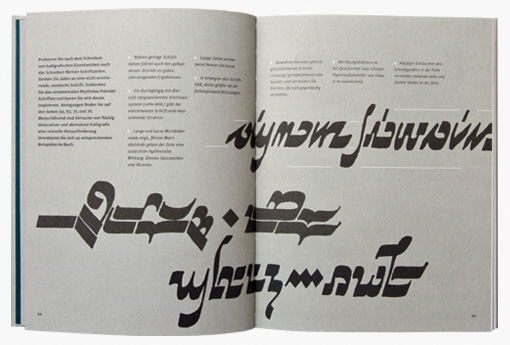
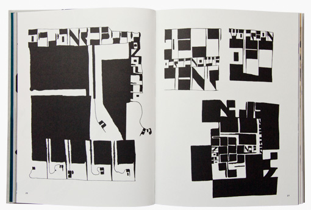
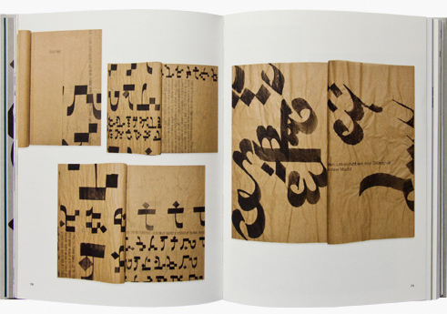
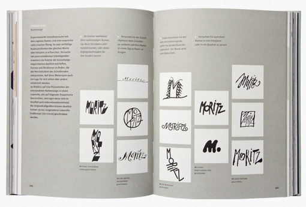
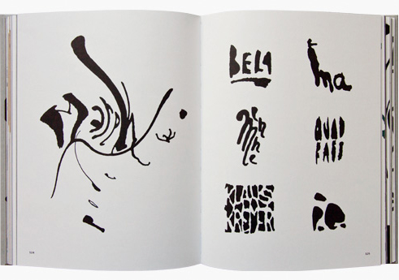
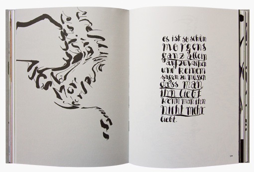

Über das Buch
Wenn Sie Kalligrafie im Sinne von Schönschrift lernen wollen und klassische ›Ballett-Etüden‹ für die Feder suchen, dann legen sie dieses Buch am besten schnell aus der Hand. Denn Tintentanz ist kalligrafischer Ausdruckstanz, ist Jazz für die Hand, die schreibt. Dieses Buch weckt die Lust, das Charakteristische beim eigenen Schreiben herauszuarbeiten und zu kultivieren. Handschrift wird zum persönlichen Ausdrucksträger: individuell – unverwechselbar – leidenschaftlich.
Pressestimmen
-
»Hier steht dann ein Zitat aus einer Rezension über den Tintentanz. Dazu die Angabe woher es stammt und den Link zum Artikel, wenn möglich.
«
Der Spiegel; die gesamte Rezension hier lesen.
-
»Noch eine Rezension. Ohne Link. Toll.
«
Alexander Surma
Über die Autoren
Hans-Jürgen Willuhn
Der Meister mag die Form zerbrechen… Hans-Jürgen Willuhn kann man ohne Bedenken einen Meisterkalligrafen nennen: Vor mehr als 50 Jahren verschrieb er sich der Buch- und Schriftgrafik, absolvierte zwei Studienabschlüsse, unter Anderem bei Albert Kapr, erhielt diverse Lehraufträge für Kalligrafie und Schriftgestaltung, hatte intensive Begegnungen mit arabischer und ostasiatischer Kalligrafie, eine Gastprofessur für Kalligrafie in Kairo, beteiligte sich an diversen Ausstellungen und last but not least ist er der Kalligraf des Gästebuches der Landesregierung Brandenburg. Da erwartet man eher kalligafische Pirouetten denn explosiven Ausdruckstanz der Tinte. Und genau das zieht die Studierenden der FH Potsdam an. Seit fast zwanzig Jahren entdecken sie bei ihm ihre eigene Schrift in Rhythmus und Dynamik, Charakteristik und Form. Vielleicht lernen nicht alle dabei »schön« schreiben, aber keiner, der je einen Willuhn-Kurs belegt hat vergisst, wie schön Schreiben sein kann…
Pauline Altmann
Menschen wie Pauline Altmann zu treffen macht Mut. In Zeiten schneller und schnellerer Studienabschlüsse hat sie sich Zeit genommen, um neben dem Studium zu arbeiten und zu reisen. Um im Studium neben ihrem ernsthaften Interesse an Typografie und Buchgestaltung auch ihr eher spielerisches Interesse an Animation und Film auszuprobieren, auszuloten und auszuleben. Da überrascht es nicht, wenn sie bescheiden und deshalb beiläufig von dem hochschul-internen Wettbewerb um das 15-jährige Villa Aurora Jubiläum erzählt, den sie gewonnen und für den sie Katalog und Ausstellungstypografie gestaltet hat. Da verwundert es nicht, dass Hans-Jürgen Willuhn, der sie im zweiten Semester mit der Frische seines Kalligrafiekonzeptes faszinierte, sie weiter im Auge behielt und ihr schließlich die Zusammenarbeit anbot. „Take your time“ möchte man dem einen oder anderen übereifrigen Bachelor zurufen, wenn man Pauline Altmann erlebt.